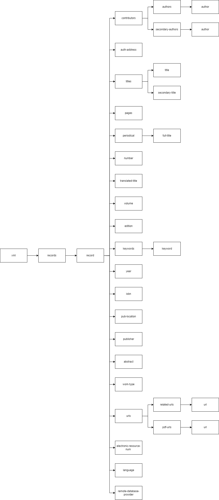

The dataset is a sample of references stored in an EndNote library, resulted from a scoping review project on latent tuberculosis and cascade of care. In this particular project, the searches were run in PubMed, Embase.com, and Scopus. The metadata included in the EndNote library serves to build references following the ISO 690:2021.
The data included in the dataset needs to varied so that the algorithm can perform a diversity of tasks. Thus, we generated a new EndNote library with randomly 500 references selected from the original EndNote library in the scoping review.
It was advantageous to start with such large dataset so that we could make a final choice of 59 records with different reference types:
We pretended having references in different languages among the records in the dataset. By using Google Translate we converted the title of some random records into other languages. In addition, we moved the title in English into the ‘translated title’ field in EndNote. In such manner we expand the field options for the algorithm to perform the tasks.
The dataset was curated further by removing the EndNote-specific metadata in order to focus on the information strictly related to the set of references. In addition, redundant tags and tags that did not apply to the set of selected records were removed or adjusted.
The image below shows a tree diagram describing the XML structure for an individual record in the dataset:
 Back to top